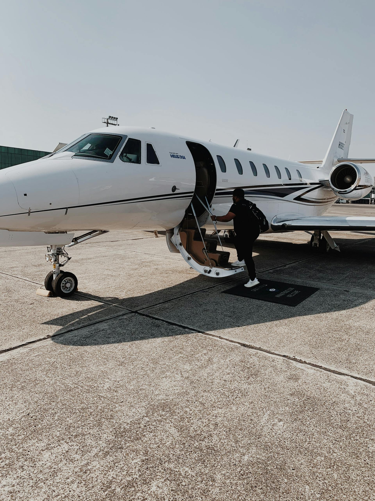

Introductie: Eindhoven als Technology Aviation Hub
Eindhoven is Nederland's fifth-largest stad maar het kloppende hart van de Nederlandse high-tech industrie. Als kern van de Brainport regio - één van Europa's top technology hubs naast Silicon Valley en Bangalore - trekt Eindhoven wereldwijd semiconductor executives, R&D professionals, en technology investors aan. Met Eindhoven Airport op 8 km van centrum biedt de stad strategische aviation connectivity voor deze unieke, innovation-driven demographic.
De Brainport regio draagt €40+ miljard bij aan Nederlandse economie en huisvest enkele van 's werelds meest strategische technology companies: ASML (world leader in lithography systems, €300+ miljard market cap), Philips headquarters en innovation campus, NXP Semiconductors facilities, VDL Groep (high-precision manufacturing), en 200+ technology startups en scaleups. High Tech Campus Eindhoven - 'smartest square kilometer in Europe' - hosts 235 companies en 12.000 R&D professionals met gemiddeld 23 patentaanvragen per dag. Voor vergelijking met andere tech-hubs, zie Amsterdam en Utrecht.
Deze concentration van technology leadership genereert zeer specifieke business aviation demand: frequent European trips naar semiconductor equipment suppliers (München, Dresden, Grenoble), international manufacturing partnerships (Taiwan, Korea, Japan voor fab visits - typically via Schiphol positioning), en investor/board meetings in financial centers. Eindhoven Airport, Nederland's tweede drukste luchthaven, heeft dedicated business aviation facilities die 20-30% goedkoper zijn dan Schiphol met strategische proximity naar alle key Brainport locations.
Eindhoven Airport (EIN): Military Heritage, Business Capabilities
Eindhoven Airport (IATA: EIN, ICAO: EHEH) is een hybrid civilian/military airport met sterke business aviation capabilities. Originally established als military air base in 1932, het airport evolueerde naar dual-use facility met significante civilian traffic (6+ miljoen passagiers jaarlijks) plus dedicated military operations en expanding business jet services.
Locatie & Tech Sector Proximity
Strategic positioning is Eindhoven's competitive advantage voor tech executives. Airport ligt 8 km west van Eindhoven centrum met excellent connectivity naar alle critical Brainport locations: ASML headquarters Veldhoven (10 min drive), High Tech Campus Eindhoven (15 min via A2/N2), Philips Innovation Campus (12 min), Brainport Industries Campus (14 min), en VDL Groep facilities (16 min). Total travel time van touchdown to ASML main entrance: 25 minuten typical - significant sneller dan Schiphol-ASML route (75+ minutes with traffic).
Bereikbaarheid voor international executives: 12-18 min naar Eindhoven Centraal Station, €18-€30 taxi naar centrum, €22-€35 naar High Tech Campus. Private car services available via FBO with tech-appropriate features (WiFi, charging stations, privacy screens) €60-€120. Helicopter transfers naar Schiphol possible: 20 min flight, €1.500-€2.500, useful voor intercontinental connections.
Runway & Aircraft Capabilities
Eindhoven heeft single runway 03/21 met lengte 3.000 meter - substantially longer dan Rotterdam (2.200m) en sufficient voor alle midsize, super midsize, en most large cabin business jets. Runway capacity supports: Light jets zoals Citation CJ3+, Phenom 300, PC-24 (fully capable, no restrictions), midsize jets zoals Citation XLS+, Challenger 350, Praetor 600 (optimal category voor European tech travel), super midsize zoals Citation Longitude, Challenger 650, Praetor 600 (comfortable operations), en large cabin zoals Gulfstream G450/G500, Falcon 7X, Global 6000 (capable maar not typical for Eindhoven-based ops).
Ultra-long-range jets (G650, Global 7500) technically able to operate but runway margin tight voor fully-loaded transatlantic departures - for safety, Schiphol preferred voor these missions. Practical reality: 95% van Eindhoven business aviation is European travel met midsize jets waar runway is excellent without Schiphol's congestion penalties.
Military/Civilian Coordination
Eindhoven's military co-location (Vliegbasis Eindhoven hosts F-35 training squadron, C-130 transport, en Apache helicopter operations) requires coordination maar is seamlessly managed. Business aviation traffic uses dedicated GA apron separate from military area. FBOs handle all military permissions - GA operators experience no administrative burden. Advantage: military-grade security infrastructure benefits business aviation with robust procedures. Occasional impact: military exercises can temporarily increase traffic coordination times (5-10 min delay max) but frequency is low en impact minimal.
Operational Hours & Flexibility
Eindhoven operates 06:00-23:00 standard civilian hours with flexibility for special operations. Night operations (23:00-06:00) possible with advance notice voor intercontinental arrivals (Asia/Americas flights landing outside standard hours). No slot restrictions for business aviation unlike Schiphol - full schedule flexibility. Weather: similar North European climate as Schiphol but less traffic congestion during IFR conditions provides reliability advantage. CAT II ILS approach available both runway directions - good all-weather capability.
Eindhoven FBO Services & Handling
Eindhoven Airport heeft dedicated General Aviation Terminal (GAT) en comprehensive FBO services optimized voor business executives met focus op efficiency en competitive pricing.
Eindhoven Business Aviation Centre
Primary FBO at Eindhoven provides full-service business aviation support: VIP lounge met business workspace, WiFi, comfortable seating voor passenger waiting/meetings, separate security screening (geen mixing met commercial passenger queues), customs/immigration facilities voor Schengen en non-Schengen arrivals (important voor US/Asia tech executive traffic), ground handling met professional marshalling teams, fueling services (Jet A-1) met competitive pricing €2,35-€2,75/liter (vs Schiphol €2,50-€3,00), aircraft cleaning en maintenance coordination, en hangar availability voor overnight/multi-day parking.
Handling fees: €500-€1.200 per operation depending on aircraft size (light jet €500-€750, midsize €750-€1.000, super midsize+ €1.000-€1.200). This is 25-35% lower dan Schiphol equivalent services (€1.500-€3.000). Service quality professional but not ultra-luxury - focus is efficiency en value, appropriate voor pragmatic tech executive demographic. Bekijk onze kosten gids voor complete breakdown.
Crew Facilities & Support Services
Crew briefing rooms met weather/flight planning workstations, rest areas voor multi-leg days, shower facilities voor long-haul crew arriving from intercontinental positioning flights, en catering coordination (local caterers provide business-appropriate meal options including healthy tech-executive preferences). Concierge services arrange ground transportation naar ASML, High Tech Campus, Philips with understanding of tech sector meeting schedules en confidentiality requirements.
Hangar & Maintenance
Limited hangar capacity available: indoor heated hangars €1.200-€3.500/maand (light/midsize jets), outdoor tie-down €350-€800/maand. Smaller hangar availability dan Schiphol maar sufficient voor regular Eindhoven-based aircraft. Maintenance coordination: FBO works with Nederlandse MRO providers en mobile maintenance teams for AOG situations. De-icing services available winter months €250-€1.000 per treatment. For major maintenance events: positioning naar Amsterdam Schiphol or Rotterdam typical.
Comparison: Eindhoven vs Schiphol Business Aviation
| Service | Eindhoven EIN | Schiphol (Jet Centre) |
|---|---|---|
| Handling fees | €500-€1.200 | €1.500-€3.000 |
| Landing fees | €250-€700 | €500-€1.500 |
| Fuel pricing | €2,35-€2,75/liter | €2,50-€3,00/liter |
| Slot restrictions | Geen | Ja (frequent) |
| Processing time | 10-15 min | 20-30 min |
| Distance to ASML | 10 min (6 km) | 75+ min (110 km) |
| Distance to High Tech Campus | 15 min (10 km) | 80+ min (115 km) |
Brainport Region: Technology Ecosystem & Aviation Demand
Understanding Eindhoven's private jet demand requires understanding Brainport's unique technology ecosystem en de international connectivity it requires.
ASML: Global Lithography Leader
ASML is single largest driver van Eindhoven business aviation. Als world's sole provider of Extreme Ultraviolet (EUV) lithography systems - critical for advanced semiconductor manufacturing - ASML executives en engineers travel constantly to semiconductor fabs worldwide (Taiwan TSMC, Korea Samsung, US Intel, Japan Sony). Typical travel patterns: Weekly European trips (München Infineon, Dresden Globalfoundries, Grenoble STMicro voor supplier partnerships), monthly Asia trips (Taipei, Seoul, Tokyo voor customer fab visits), en quarterly US trips (Silicon Valley, Arizona, Oregon voor Intel/tech partnerships).
ASML corporate fleet includes leased business jets based primarily at Schiphol for long-haul but increasingly using Eindhoven for European missions to optimize costs en proximity. Company also extensively uses charter services: estimated 200+ business jet movements per jaar ASML-related (mix of corporate, charter, en employee-arranged private travel). With stock options making senior ASML engineers millionaires, fractional ownership en jet cards popular in this demographic.
Philips Innovation & Healthcare Technology
Philips, while no longer manufacturing consumer electronics, maintains significant healthcare technology en innovation operations in Eindhoven. Global headquarters generates executive travel to Philips offices worldwide (Boston headquarters voor North America, Shanghai Asia Pacific, Hamburg Germany operations). Travel profile: frequent European business meetings, quarterly board travel (international directors), en R&D partnerships met medical institutions globally. Less aviation demand than ASML maar still substantial - estimated 50-80 business jet movements per jaar Philips-related.
High Tech Campus & Startup Ecosystem
High Tech Campus Eindhoven (235 companies, 12.000 employees) generates diverse aviation demand: Startup founders meeting US/Asia venture capital investors (Silicon Valley, Singapore, Tel Aviv trips), R&D collaborations (frequent Cambridge UK, Stockholm, Helsinki tech partnerships), en international recruitment (bringing candidates from US/India/China voor interviews). Smaller individual volume maar aggregate demand substantial. Typical: 30-50 charter flights per jaar coordinated via campus companies, growing trend toward fractional ownership among successful founders.
Semiconductor Supply Chain
Brainport hosts NXP Semiconductors facilities, TSMC European expansion plans, en 50+ semiconductor equipment suppliers. These companies maintain frequent connectivity to global semiconductor hubs: München (Infineon, Siemens, TU München), Dresden (Globalfoundries fab), Helsinki (Nokia/tech sector), Grenoble (STMicro, Soitec, French semiconductor cluster), Leuven (IMEC research center), plus Asia trips (Taiwan, Korea, Japan). Aviation economics: for trips onder 2.500 km, charter from Eindhoven often cheaper dan commercial business class when considering total travel time savings.

Routes & Destinations: Technology Connectivity
Eindhoven's route profile is distinctly technology-ecosystem focused, very different from Amsterdam's broader business/leisure mix.
Top European Tech Routes from Eindhoven
| Bestemming | Vliegtijd | Afstand | Charter Kosten (roundtrip) | Primary Sector |
|---|---|---|---|---|
| München (MUC) | 1,5u | 650 km | €8.500-€15.000 | Semiconductor (Infineon/Siemens) |
| Dresden (DRS) | 1,5u | 700 km | €9.000-€16.000 | Semiconductor fab (Globalfoundries) |
| Helsinki (HEL) | 2u | 1.650 km | €11.000-€19.000 | Nokia/Nordic tech partnerships |
| Grenoble (GNB) | 1,5u | 850 km | €9.500-€17.000 | STMicro/French semiconductor |
| Leuven/Brussels | 45 min | 120 km | €5.500-€11.000 | IMEC research collaboration |
| Zürich (ZRH) | 1,5u | 650 km | €9.000-€16.000 | Tech financing/ETH partnerships |
| Cambridge UK (CBG) | 1,5u | 500 km | €8.000-€15.000 | ARM/university tech transfer |
| Tel Aviv (TLV) | 4u | 3.300 km | €22.000-€38.000 | Israeli semiconductor startups |
| Stockholm (ARN) | 2u | 1.200 km | €11.000-€20.000 | Ericsson partnerships |
| Toulouse (TLS) | 2u | 1.150 km | €10.000-€18.000 | Airbus/aerospace tech |
Long-Haul Semiconductor Routes (via Schiphol Positioning)
Voor critical Asia/US semiconductor routes, Brainport executives typically position naar Schiphol for ultra-long-range aircraft:
- San Jose/Silicon Valley: 13u total (via Schiphol positioning), €180.000-€320.000 roundtrip (super midsize/large cabin). ASML-Intel partnerships, VC meetings, startup acquisitions. Typically 20-30 trips/jaar by ASML executives, plus venture-backed founders.
- Tokyo Narita: 14u total, €220.000-€380.000. Sony semiconductor partnerships, Japanese supplier meetings, Tokyo tech ecosystem. Monthly traffic peak for ASML Japan relationships.
- Seoul Incheon: 13,5u total, €200.000-€360.000. Samsung foundry visits (critical ASML customer), SK Hynix memory fab, Korean semiconductor equipment suppliers. Very frequent route - weekly during peak production ramps.
- Taipei Taiwan: 14u total, €220.000-€380.000. TSMC fab visits (world's largest semiconductor foundry, ASML's biggest customer). Extremely high frequency - some ASML executives make this trip monthly. Charter often preferred over commercial for confidentiality en schedule flexibility during production issues.
Optimal Aircraft for Eindhoven Tech Routes
Midsize Jets (Citation XLS+, Challenger 350, Praetor 600): Optimal voor 80% van Brainport European travel. Range 3.500-4.000 km covers all European tech hubs comfortably. 7-8 passengers sufficient voor typical executive + engineering team. Operating economics excellent: €4.200-€6.500/hour all-in. Perfect match voor Eindhoven runway without restrictions. Recommended als primary aircraft voor Brainport-based owners focused on European operations.
Super Midsize (Citation Longitude, Challenger 650): Extended range 4.500-5.000 km enables Eindhoven-Tel Aviv, Eindhoven-Moscow (when permitted), with better comfort than midsize voor 4-6 hour missions. Higher operating cost €6.000-€8.500/hour maar worthwhile voor frequent 3-5 hour trips. Good Eindhoven runway compatibility. Ideal voor companies with mix of European + occasional Middle East travel.
Large Cabin (Gulfstream G450/G500, Falcon 7X): Range sufficient voor transatlantic with tech stop (Eindhoven-Reykjavik-New York theoretically possible met G500) maar not optimal. Better strategy: base at Eindhoven, position to Schiphol for long-haul missions. Eindhoven runway adequate maar margins tighter - weather/weight considerations more critical. Typically used by ASML corporate fleet for Asia trips (Schiphol departure) while using Eindhoven for European positioning flights.
Kosten & Prijzen: Eindhoven Tech Executive Operations
Operating costs from Eindhoven zijn 20-30% lager than Schiphol for equivalent missions, with additional time-savings value for Brainport proximity.
Charter Pricing from Eindhoven
Light Jets (Citation CJ3+, Phenom 300): €2.300-€3.800/uur. Perfect voor solo executive or small team European trips. Eindhoven-München €8.000-€14.000 roundtrip, Eindhoven-Dresden €8.500-€15.000, Eindhoven-Leuven €5.500-€11.000. Ground handling saving €300-€600 per trip vs Schiphol plus time advantage (avoid Schiphol congestion) worth additional €1.000-€2.000 in executive productivity.
Midsize Jets (Citation XLS+, Challenger 350): €4.200-€6.500/uur. Sweet spot voor Brainport operations - capacity voor executive team + engineers, range for all European tech hubs, comfortable voor 3-4 hour missions. Eindhoven-Helsinki €11.000-€19.000, Eindhoven-Tel Aviv €22.000-€38.000, Eindhoven-Stockholm €11.000-€20.000. Total savings vs Schiphol departure: €800-€1.500 per roundtrip on ground fees alone.
Super Midsize+ (Citation Longitude, Challenger 650): €6.000-€8.500/uur. For extended missions + enhanced comfort. Higher cost maar appropriate for senior executive travel + confidential engineering discussions requiring private space. Less frequently used from Eindhoven - typically companies position these aircraft to Schiphol for long-haul then use Eindhoven for European returns.
Cost Comparison: Eindhoven vs Schiphol Operations
| Cost Category | Eindhoven EIN | Schiphol | Savings per Trip |
|---|---|---|---|
| Ground handling | €500-€1.200 | €1.500-€3.000 | €900-€1.800 |
| Landing fees | €250-€700 | €500-€1.500 | €250-€800 |
| Fuel (2.000L typical) | €4.700-€5.500 | €5.000-€6.000 | €300-€500 |
| Ground transport to ASML | €25-€35 (10 min) | €180-€250 (75 min) | €150-€215 + 65min time |
| Total per roundtrip | - | - | €1.600-€3.300 + time savings |
Annual Savings Example: Brainport-Based Operations
Scenario: ASML executive team, 80 European trips per jaar (roundtrip Munich, Dresden, Helsinki mix), Citation XLS+ aircraft based at Eindhoven vs Schiphol alternative.
Eindhoven Base:
Hangar: €30.000/jaar (€2.500/maand)
Ground handling: €80.000 (€1.000 avg × 80 trips)
Landing fees: €40.000 (€500 avg × 80 trips)
Fuel cost advantage: €20.000 (€250/trip × 80)
Ground transport savings: €12.000 (€150/trip × 80)
Total: €182.000
Schiphol Base:
Hangar: €60.000/jaar (€5.000/maand premium location)
Ground handling: €180.000 (€2.250 avg × 80 trips)
Landing fees: €80.000 (€1.000 avg × 80 trips)
Fuel: €400.000 (baseline)
Ground transport: €20.000 (shorter distances from Schiphol to AMS vs EIN to ASML)
Total: €740.000
Annual Savings with Eindhoven Base: €58.000 (32% reduction) plus estimated 50+ hours executive time savings (no Schiphol congestion, closer to Brainport destinations).
Voor complete cost breakdown zie onze Complete Kosten Gids.
Privéjet Kopen: Brainport Executive Market
Eindhoven's private jet ownership market is smaller maar higher quality than Amsterdam - driven by tech sector wealth en specific aviation requirements.
Buyer Demographics
Typical Eindhoven-area private jet buyers: ASML senior executives en early employees (stock options creating €10-50 million+ wealth), successful tech entrepreneurs (High Tech Campus startups acquired by US/European corporates), Philips senior management, semiconductor industry executives (NXP, equipment suppliers), en international investors in Brainport companies (German Mittelstand family offices, Silicon Valley VCs with Netherlands presence).
Buyer profile differs from Amsterdam finance: more engineering-focused (appreciate technical specifications, operating economics), pragmatic about aircraft selection (less brand-driven than finance executives), en mission-specific (optimize for European tech travel, not general business/leisure). Preferred aircraft: Citation XLS+/Latitude (reliable, economical), Challenger 350 (good range/comfort balance), Praetor 600 (modern, tech-forward systems). Less common: ultra-luxury brands (Gulfstream G650) unless required for Asia travel.
Ownership Structures
Most Brainport aircraft ownership via Nederlandse BV structures for tax efficiency: Aircraft held in ownership BV, chartered back to operating company or personal holding, BTW (21%) recovery via documented business use, en depreciation over 10-15 jaar reduces corporate tax burden. ASML employees + other tech executives vaak combine aircraft ownership met other business interests (real estate holdings, tech investments) in integrated holding structures.
Tax advisors familiar with tech sector: Deloitte Brainport practice, PwC Netherlands Technology Group, en KPMG Innovation & Technology serve this market. Maritime tax experience from Rotterdam/Amsterdam useful but tech sector has specific considerations (international employment, stock option taxation, R&D partnerships requiring confidential travel).
Fractional Ownership & Jet Cards
Growing trend among Brainport executives: fractional ownership 1/8 to 1/4 shares (NetJets Europe, Flexjet) provides 50-100 hours/jaar without full ownership commitment. Typical profile: ASML senior director level (not yet C-suite), need for European flexibility maar not yet justifying dedicated aircraft. Cost: €250.000-€600.000 initial + €8.000-€15.000/hour operating. Popular aircraft: Citation Latitude, Challenger 350 programs.
Jet card programs (Victor, PrivateFly, Luxaviation) increasingly used by younger tech entrepreneurs - €100.000-€250.000 deposit, no ownership commitment, on-demand availability. Appropriate voor variable travel patterns during startup growth phases before ownership makes sense.
Voor complete buying process zie onze Privéjet Kopen Gids.
Charter Services & Empty Legs
Charter from Eindhoven remains most common option for technology executives - flexibility without ownership costs.
Charter Operators Serving Eindhoven
Major European charter brokers serve Eindhoven market: VistaJet (focused on corporate contracts, popular with ASML for predictable pricing), Air Charter Service (large broker, good aircraft availability), Luxaviation (premium service, used for board-level travel), en Nederlandse operators zoals Solid Air en JetNetherlands. International operators position aircraft to Eindhoven for one-way trips, creating empty leg opportunities.
Empty Legs from Eindhoven
Limited but growing empty leg market. Typical scenarios: Corporate aircraft returning to home base after dropping Brainport executives (München-Eindhoven empty after Eindhoven-München outbound), charter operators repositioning after one-way trips, en seasonal patterns (less tech travel during August European holidays creates positioning opportunities). Discount: 40-70% off standard charter price. Best sources: JetApp, Victor, PrivateFly alert systems. Flexibility required - departure windows often 24-48 hour notice.
Example empty legs: München-Eindhoven (return from supplier meeting) €4.000-€7.000 vs standard charter €8.500-€15.000, Zürich-Eindhoven €3.500-€6.000 vs €9.000-€16.000 standard. Worth monitoring for flexible travel where schedule permits.
Zie onze Huren vs Kopen Guide om te bepalen optimal strategy voor uw travel frequency.
Regelgeving & Airport Operations
Eindhoven operations vallen onder standard EASA regulations met additional military coordination requirements seamlessly handled by FBOs.
EASA Compliance
Alle aircraft operations identical to other Nederlandse airports: EASA Part-M (continuing airworthiness), Part-NCO/NCC operating rules, standard European aviation regulations. Aircraft registration via Nederlandse ILT (Inspectie Leefomgeving en Transport) met PH- prefix standard, though foreign-registered aircraft (M-, N-, 2-registrations) operate freely under EASA rules. No Eindhoven-specific deviations.
Military Coordination
Eindhoven's military co-use requires coordination maar transparent for GA: FBOs obtain necessary military clearances (24-48 hour advance notice typical), Approach Control Eindhoven coordinates military en civilian traffic seamlessly, en dedicated GA apron eliminates any mixing with military aircraft. Impact on business aviation: minimal - occasional 5-10 minute holds during F-35 training operations but infrequent. Security benefit: military-grade perimeter security stronger than pure civilian airports.
Environmental & Noise
Eindhoven heeft moderate noise restrictions - less stringent than Schiphol maar more than Rotterdam. Night operations (23:00-06:00) discouraged maar possible for intercontinental arrivals with advance notice. No formal noise quotas for business aviation. Environmental: EU ETS (Emissions Trading System) en CORSIA (Carbon Offsetting scheme) apply identical to Schiphol. SAF (Sustainable Aviation Fuel) available through FBOs on request, though premium pricing €3,50-€4,20/liter vs conventional €2,35-€2,75.
Future outlook: Eindhoven unlikely krijgen Schiphol-level restrictions door regional economic importance (Brainport is nationally strategic) en military presence (Defense considerations limit civilian restrictions). Long-term viable base voor business aviation.
Eindhoven vs Schiphol vs Rotterdam: Decision Framework
Choosing between Zuid-Nederlandse airports depends on mission profile, corporate location, en service priorities.
Three-Way Airport Comparison
| Factor | Eindhoven | Schiphol | Rotterdam |
|---|---|---|---|
| Operating costs | 20-30% lager dan AMS | Basis (hoogst) | 25-35% lager dan AMS |
| Runway lengte | 3.000m (excellent) | 3.400m+ (all types) | 2.200m (midsize max) |
| Slot restrictions | Geen | Ja (significant) | Geen |
| Max aircraft size | Large cabin capable | Unlimited | Midsize practical limit |
| FBO amenities | Professional/Functional | Luxury/Premium | Functional/Efficient |
| To ASML Veldhoven | 10 min | 75+ min | 65 min |
| To High Tech Campus | 15 min | 80+ min | 70 min |
| Best for | Brainport tech sector | Intercontinental/large AC | Rotterdam port business |
When to Choose Eindhoven
- Brainport business base: Company located in Eindhoven, Veldhoven, or High Tech Campus area
- Technology sector: Semiconductor, high-tech manufacturing, R&D companies with European focus
- European route majority: 80%+ trips within 2.500 km (München, Dresden, Helsinki, Grenoble, etc.)
- Cost optimization: 20-30% savings vs Schiphol meaningful for travel budget
- Schedule flexibility needed: No slot restrictions critical for tech project timelines
- ASML proximity: Frequent visits to ASML facilities where 65-minute time savings per trip adds up substantially
When to Choose Schiphol
- Intercontinental primary mission: Frequent Asia/Americas travel requiring ultra-long-range aircraft
- Amsterdam business base: Company headquarters in Zuidas or Amsterdam centrum
- Large aircraft operations: G650, Global 7500, or similar requiring maximum runway/payload capability
- Premium service expectation: Client-facing travel where luxury FBO matters for impression
- Connectivity requirements: Need for commercial airline connections when private jet impractical
Hybrid Strategy for Brainport Companies
Optimal approach voor many technology companies: Base aircraft at Eindhoven voor European operations (frequent München, Dresden, Helsinki runs saving €25.000-€60.000/jaar vs Schiphol), maar position naar Schiphol for quarterly Asia trips requiring ultra-long-range aircraft. Positioning cost Eindhoven-Schiphol: €3.000-€5.000 (30 min flight), 3-4 times per jaar = €12.000-€20.000. Net savings: €13.000-€48.000/jaar while maintaining global reach. Best of both worlds - Eindhoven economics + Brainport proximity voor daily operations, Schiphol capabilities when needed for strategic intercontinental missions.
FAQ - Eindhoven Privéjet
Start Uw Brainport Aviation Journey
Ontdek welke privéjet strategie het beste past bij uw technology business - kopen, charter, of fractional ownership vanuit Eindhoven.
Voor directe vragen: Contact@jetselect.nl